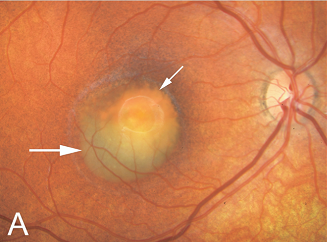
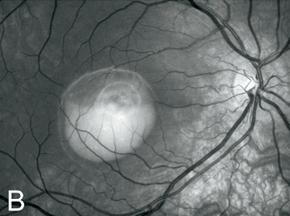
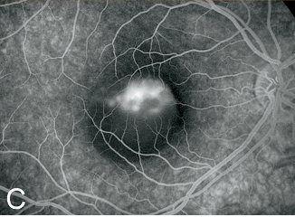
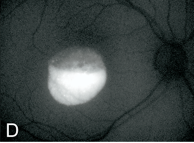
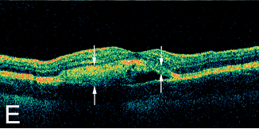
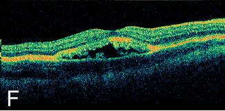

Best's disease
* Định nghĩa:
+ Bệnh Best.

Hình: Tổn thương hoàng điểm dạng lòng đỏ trứng
+ Thoái hóa biểu mô sắc tố võng mạc di truyền trội, ảnh hưởng vùng hoàng điểm trước tiên. Tổn thương ban đầu có dạng cái lòng đỏ trứng gà (Vitelliform), ở các giai đoạn sau có thể giống quả trứng đã bị quấy. Do đột biến ở gen peripherin/RDS. Cuối cùng nó được hấp thu, để lại sẹo, những biến đổi về sắc tố và tổn hại thị lực trung tâm, cho dù một số trường hợp tổn thương võng mạc có thể không ở trung tâm và ảnh hưởng ít đến thị lực.

Hình: Vitelliform qua ảnh trắng đen
+ Đồng nghĩa: Best's Vitelliform Macular Dystrophy, Vitelliform Degeneration, Vitelliform Macular Dystrophy

Hình: Tổn thương được mô tả bằng chụp mạch huỳnh quang

Hình: Tổn thương được mô tả bằng mạch huỳnh quang tự động (Autofluorescence)

Hình: OCT thiết đồ cắt dọc qua vùng tổn thương

Hình: OCT thiết đồ cắt ngang qua vùng tổn thương